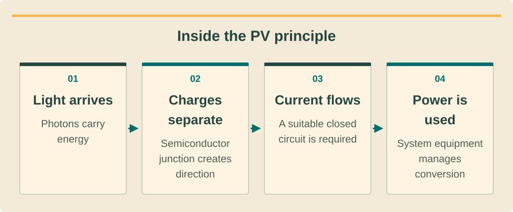

What is Solar Energy?
מהי אנרגיה סולארית?
พลังงานแสงอาทิตย์คืออะไร?
The Photovoltaic Effect
האפקט הפוטו-וולטאי
ปรากฏการณ์โฟโตวอลตาอิก
Solar energy harnesses the power of sunlight to generate electricity. At the heart of every solar panel is the photovoltaic (PV) effect — a physical phenomenon discovered by French physicist Edmond Becquerel in 1839. When photons (light particles) from the sun strike a semiconductor material like silicon, they transfer their energy to electrons, knocking them free from their atoms. This creates an electric current.
אנרגיה סולארית מנצלת את כוח השמש לייצור חשמל. בלב כל פאנל סולארי נמצא האפקט הפוטו-וולטאי (PV) — תופעה פיזיקלית שהתגלתה על ידי הפיזיקאי הצרפתי אדמונד בקרל ב-1839. כאשר פוטונים (חלקיקי אור) מהשמש פוגעים בחומר מוליך למחצה כמו סיליקון, הם מעבירים את האנרגיה שלהם לאלקטרונים ומשחררים אותם מהאטומים. כך נוצר זרם חשמלי.
พลังงานแสงอาทิตย์ใช้ประโยชน์จากแสงอาทิตย์ในการผลิตไฟฟ้า หัวใจของแผงโซลาร์เซลล์ทุกแผงคือ ปรากฏการณ์โฟโตวอลตาอิก (PV) — ปรากฏการณ์ทางฟิสิกส์ที่ค้นพบโดยนักฟิสิกส์ชาวฝรั่งเศส เอ็ดมงด์ เบ็กเกอเรล ในปี 1839 เมื่อโฟตอน (อนุภาคแสง) จากดวงอาทิตย์กระทบกับวัสดุสารกึ่งตัวนำ เช่น ซิลิคอน พวกมันจะถ่ายโอนพลังงานไปยังอิเล็กตรอน ทำให้อิเล็กตรอนหลุดออกจากอะตอม สร้างกระแสไฟฟ้า
A solar cell consists of two layers of silicon — one doped with phosphorus (n-type, extra electrons) and one doped with boron (p-type, electron "holes"). Where these layers meet, a p-n junction creates an electric field. When photons free electrons at this junction, the electric field pushes them into a circuit, generating direct current (DC) electricity.
תא סולארי מורכב משתי שכבות סיליקון — אחת מעושרת בזרחן (מסוג n, עודף אלקטרונים) ואחת מעושרת בבורון (מסוג p, "חורים" של אלקטרונים). במקום המפגש של שכבות אלו, צומת p-n יוצרת שדה חשמלי. כאשר פוטונים משחררים אלקטרונים בצומת זה, השדה החשמלי דוחף אותם למעגל חשמלי ומייצר זרם ישר (DC).
เซลล์แสงอาทิตย์ประกอบด้วยซิลิคอนสองชั้น — ชั้นหนึ่งเจือด้วยฟอสฟอรัส (ชนิด n มีอิเล็กตรอนเกิน) และอีกชั้นเจือด้วยโบรอน (ชนิด p มี "ช่องว่าง" อิเล็กตรอน) จุดที่ชั้นเหล่านี้มาบรรจบกัน รอยต่อ p-n จะสร้างสนามไฟฟ้า เมื่อโฟตอนปลดปล่อยอิเล็กตรอนที่รอยต่อนี้ สนามไฟฟ้าจะผลักพวกมันเข้าสู่วงจร ทำให้เกิดกระแสไฟฟ้าตรง (DC)
Photovoltaic (PV) Effectאפקט פוטו-וולטאיปรากฏการณ์โฟโตวอลตาอิก — The process by which light energy is converted directly into electrical energy in a semiconductor material.התהליך שבו אנרגיית אור מומרת ישירות לאנרגיה חשמלית בחומר מוליך למחצה.กระบวนการที่พลังงานแสงถูกแปลงโดยตรงเป็นพลังงานไฟฟ้าในวัสดุสารกึ่งตัวนำ
See the ideaרואים את הרעיוןมองเห็นแนวคิด
Inside the PV principleעקרון התא הפוטו־וולטאיหลักการภายในเซลล์แสงอาทิตย์

- Top left: solar module — converts sunlight into DC electricity.למעלה משמאל: פאנל — ממיר אור שמש לחשמל DC.ซ้ายบน: แผงโซลาร์ — เปลี่ยนแสงอาทิตย์เป็นไฟฟ้า DC
- Top right: inverter — controls conversion between electrical interfaces.למעלה מימין: ממיר — מנהל המרה בין ממשקים חשמליים.ขวาบน: อินเวอร์เตอร์ — ควบคุมการแปลงระหว่างส่วนต่อไฟฟ้า
- Bottom left: battery — stores energy for later use.למטה משמאל: סוללה — אוגרת אנרגיה לשימוש מאוחר יותר.ซ้ายล่าง: แบตเตอรี่ — เก็บพลังงานไว้ใช้ภายหลัง
- Bottom right: electricity meter — measures energy at its defined boundary.למטה מימין: מונה — מודד אנרגיה בגבול שהוגדר עבורו.ขวาล่าง: มิเตอร์ไฟฟ้า — วัดพลังงาน ณ ขอบเขตที่กำหนด

Read the diagram as textקריאת התרשים כטקסטอ่านแผนภาพเป็นข้อความ
- Light arrivesהאור מגיעแสงตกกระทบ — Photons carry energyפוטונים נושאים אנרגיהโฟตอนนำพลังงานมา
- Charges separateמטענים נפרדיםประจุแยกตัว — Semiconductor junction creates directionצומת מוליך למחצה יוצר כיווןรอยต่อสารกึ่งตัวนำกำหนดทิศ
- Current flowsזרם עוברกระแสไหล — A suitable closed circuit is requiredנדרש מעגל סגור מתאיםต้องมีวงจรปิดที่เหมาะสม
- Power is usedההספק מנוצלใช้กำลังไฟ — System equipment manages conversionציוד המערכת מנהל המרהอุปกรณ์ระบบจัดการการแปลง
DC vs AC Electricity
זרם ישר (DC) מול זרם חילופין (AC)
ไฟฟ้า DC กับ AC
Solar panels produce Direct Current (DC) — electricity that flows in one direction. However, our homes, businesses, and the electrical grid run on Alternating Current (AC) — electricity that reverses direction many times per second (50 Hz in Thailand and Israel, 60 Hz in the USA).
פאנלים סולאריים מייצרים זרם ישר (DC) — חשמל שזורם בכיוון אחד. אולם, הבתים, העסקים ורשת החשמל שלנו עובדים על זרם חילופין (AC) — חשמל שמשנה כיוון פעמים רבות בשנייה (50 הרץ בתאילנד ובישראל, 60 הרץ בארה"ב).
แผงโซลาร์เซลล์ผลิต กระแสไฟฟ้าตรง (DC) — ไฟฟ้าที่ไหลในทิศทางเดียว แต่บ้าน ธุรกิจ และระบบสายส่งไฟฟ้าใช้ กระแสไฟฟ้าสลับ (AC) — ไฟฟ้าที่เปลี่ยนทิศทางหลายครั้งต่อวินาที (50 Hz ในประเทศไทยและอิสราเอล, 60 Hz ในสหรัฐอเมริกา)
To bridge this gap, every solar system includes an inverter that converts DC to AC. This is one of the most important components in any solar installation — we'll cover inverters in detail in Lesson 3.
כדי לגשר על הפער הזה, כל מערכת סולארית כוללת ממיר (אינוורטר) שממיר DC ל-AC. זהו אחד הרכיבים החשובים ביותר בכל התקנה סולארית — נלמד על ממירים בפירוט בשיעור 3.
เพื่อเชื่อมช่องว่างนี้ ระบบโซลาร์ทุกระบบจะมี อินเวอร์เตอร์ ที่แปลง DC เป็น AC นี่เป็นหนึ่งในส่วนประกอบที่สำคัญที่สุดในการติดตั้งโซลาร์เซลล์ — เราจะเรียนเรื่องอินเวอร์เตอร์อย่างละเอียดในบทที่ 3
Inverterממיר (אינוורטר)อินเวอร์เตอร์ — A device that converts DC electricity from solar panels into AC electricity for use in buildings and the grid.מכשיר שממיר חשמל DC מפאנלים סולאריים לחשמל AC לשימוש במבנים וברשת.อุปกรณ์ที่แปลงไฟฟ้า DC จากแผงโซลาร์เซลล์เป็นไฟฟ้า AC เพื่อใช้ในอาคารและระบบสายส่ง
Solar Spectrum & Irradiance
ספקטרום סולארי וקרינה
สเปกตรัมแสงอาทิตย์และความเข้มของรังสี
The sun emits electromagnetic radiation across a wide spectrum — from ultraviolet through visible light to infrared. Solar panels are designed to capture primarily the visible light and near-infrared portions of this spectrum, which carry the most energy suitable for the PV effect.
השמש פולטת קרינה אלקטרומגנטית על פני ספקטרום רחב — מאולטרה-סגול, דרך אור נראה ועד אינפרא-אדום. פאנלים סולאריים מתוכננים ללכוד בעיקר את חלקי האור הנראה והאינפרא-אדום הקרוב של ספקטרום זה, שנושאים את רוב האנרגיה המתאימה לאפקט ה-PV.
ดวงอาทิตย์ปล่อยรังสีแม่เหล็กไฟฟ้าครอบคลุมสเปกตรัมกว้าง — ตั้งแต่อัลตราไวโอเลต ผ่านแสงที่มองเห็นได้ ไปจนถึงอินฟราเรด แผงโซลาร์เซลล์ถูกออกแบบมาเพื่อดักจับ แสงที่มองเห็นได้ และ อินฟราเรดใกล้ เป็นหลัก ซึ่งมีพลังงานมากที่สุดที่เหมาะกับปรากฏการณ์ PV
Solar irradiance measures the power of sunlight per unit area, expressed in watts per square meter (W/m²). Under standard test conditions (STC), irradiance is defined as 1,000 W/m² — this is the baseline for rating solar panel output. In real-world conditions, irradiance varies based on time of day, weather, season, and location.
קרינת שמש (irradiance) מודדת את עוצמת אור השמש ליחידת שטח, מבוטאת בוואט למטר רבוע (W/m²). בתנאי בדיקה סטנדרטיים (STC), הקרינה מוגדרת כ-1,000 W/m² — זהו קו הבסיס לדירוג תפוקת פאנלים סולאריים. בתנאים אמיתיים, הקרינה משתנה בהתאם לשעה ביום, מזג אוויר, עונה ומיקום.
ความเข้มของรังสีอาทิตย์ (Irradiance) วัดกำลังของแสงอาทิตย์ต่อหน่วยพื้นที่ แสดงเป็นวัตต์ต่อตารางเมตร (W/m²) ภายใต้สภาวะทดสอบมาตรฐาน (STC) ความเข้มของรังสีถูกกำหนดที่ 1,000 W/m² — นี่คือค่าพื้นฐานสำหรับการจัดอันดับกำลังผลิตของแผงโซลาร์เซลล์ ในสภาพจริง ความเข้มจะแตกต่างกันตามเวลาของวัน สภาพอากาศ ฤดูกาล และตำแหน่งที่ตั้ง
Peak Sun Hours (PSH)שעות שמש שיא (PSH)ชั่วโมงแสงอาทิตย์สูงสุด (PSH) — The number of hours per day when solar irradiance equals 1,000 W/m². Thailand averages 4.2–5.0 PSH/day — among the best in Asia.מספר השעות ביום שבהן קרינת השמש שווה ל-1,000 W/m². הממוצע בתאילנד הוא 4.2–5.0 PSH ביום — מהגבוהים באסיה.จำนวนชั่วโมงต่อวันที่ความเข้มของรังสีอาทิตย์เท่ากับ 1,000 W/m² ประเทศไทยเฉลี่ย 4.2–5.0 PSH/วัน — ดีที่สุดแห่งหนึ่งในเอเชีย
A Brief History of Solar Energy
היסטוריה קצרה של אנרגיה סולארית
ประวัติโดยย่อของพลังงานแสงอาทิตย์
The journey of solar energy spans nearly two centuries:
המסע של אנרגיה סולארית משתרע על פני כמעט שתי מאות שנה:
เส้นทางของพลังงานแสงอาทิตย์ยาวนานเกือบสองศตวรรษ:
- 1839 — Edmond Becquerel discovers the photovoltaic effect
- 1883 — Charles Fritts builds the first solar cell (~1% efficiency)
- 1954 — Bell Labs creates the first practical silicon solar cell (6% efficiency)
- 1958 — Vanguard I satellite uses solar cells in space
- 1970s — Oil crisis sparks interest in solar as an alternative energy source
- 2000s — Feed-in tariffs in Germany drive massive industry growth
- 2010s — Solar costs drop 89%, making it the cheapest electricity source in history
- 2024 — Global solar capacity exceeds 1.6 TW; panel efficiency reaches 24%+ commercially
- 1839 — אדמונד בקרל מגלה את האפקט הפוטו-וולטאי
- 1883 — צ'ארלס פריטס בונה את התא הסולארי הראשון (~1% יעילות)
- 1954 — מעבדות בל יוצרות את התא הסולארי המעשי הראשון מסיליקון (6% יעילות)
- 1958 — לוויין ואנגארד I משתמש בתאים סולאריים בחלל
- שנות ה-70 — משבר הנפט מעורר עניין בסולאר כמקור אנרגיה חלופי
- שנות ה-2000 — תעריפי הזנה בגרמניה מניעים צמיחה מסיבית בתעשייה
- שנות ה-2010 — עלויות סולאר צונחות ב-89%, הופכות אותה למקור החשמל הזול ביותר בהיסטוריה
- 2024 — קיבולת סולארית עולמית עוברת 1.6 TW; יעילות פאנלים מגיעה ל-24%+ מסחרית
- 1839 — เอ็ดมงด์ เบ็กเกอเรล ค้นพบปรากฏการณ์โฟโตวอลตาอิก
- 1883 — ชาร์ลส์ ฟริตส์ สร้างเซลล์แสงอาทิตย์เซลล์แรก (ประสิทธิภาพ ~1%)
- 1954 — Bell Labs สร้างเซลล์แสงอาทิตย์ซิลิคอนที่ใช้งานได้จริงเซลล์แรก (ประสิทธิภาพ 6%)
- 1958 — ดาวเทียม Vanguard I ใช้เซลล์แสงอาทิตย์ในอวกาศ
- ทศวรรษ 1970 — วิกฤตน้ำมันกระตุ้นความสนใจในโซลาร์เป็นแหล่งพลังงานทางเลือก
- ทศวรรษ 2000 — อัตราค่าไฟฟ้ารับซื้อในเยอรมนีผลักดันการเติบโตของอุตสาหกรรมอย่างมาก
- ทศวรรษ 2010 — ต้นทุนโซลาร์ลดลง 89% ทำให้เป็นแหล่งไฟฟ้าที่ถูกที่สุดในประวัติศาสตร์
- 2024 — กำลังการผลิตโซลาร์ทั่วโลกเกิน 1.6 TW ประสิทธิภาพแผงถึง 24%+ ในเชิงพาณิชย์
The price of solar panels has dropped from $76.67/watt in 1977 to less than $0.20/watt today — a reduction of over 99.7%. This dramatic cost decline is often called "Swanson's Law."
מחיר פאנלים סולאריים ירד מ-$76.67 לוואט ב-1977 לפחות מ-$0.20 לוואט היום — ירידה של מעל 99.7%. ירידת מחירים דרמטית זו נקראת לעתים "חוק סוואנסון."
ราคาแผงโซลาร์เซลล์ลดลงจาก $76.67/วัตต์ ในปี 1977 เหลือน้อยกว่า $0.20/วัตต์ ในปัจจุบัน — ลดลงมากกว่า 99.7% การลดลงของต้นทุนอย่างมากนี้มักเรียกว่า "กฎของสวอนสัน"
Why Solar in Thailand?
למה סולאר בתאילנד?
ทำไมต้องโซลาร์ในประเทศไทย?
Thailand is one of the best locations for solar energy in Southeast Asia. Here's why:
תאילנד היא אחד המיקומים הטובים ביותר לאנרגיה סולארית בדרום-מזרח אסיה. הנה הסיבות:
ประเทศไทยเป็นหนึ่งในสถานที่ที่ดีที่สุดสำหรับพลังงานแสงอาทิตย์ในเอเชียตะวันออกเฉียงใต้ นี่คือเหตุผล:
- Excellent solar irradiance: 4.2–5.0 peak sun hours daily across most regions
- High electricity costs: PEA rates of ฿4–6/kWh make solar savings significant
- Government support: Net billing, BOI incentives, and ERC frameworks
- Growing demand: Industrial and commercial sectors rapidly adopting rooftop solar
- Year-round sunshine: Even during monsoon season, solar systems produce 60–70% of peak output
- Climate goals: Thailand's 30@30 policy targets 30% renewable energy by 2030
- קרינת שמש מצוינת: 4.2–5.0 שעות שמש שיא יומיות ברוב האזורים
- עלויות חשמל גבוהות: תעריפי PEA של ฿4–6 לקוט"ש הופכים חיסכון סולארי למשמעותי
- תמיכה ממשלתית: מדידה נטו, תמריצי BOI ומסגרות ERC
- ביקוש גדל: מגזרים תעשייתיים ומסחריים מאמצים סולאר על הגג במהירות
- שמש כל השנה: גם בעונת המונסון, מערכות סולאריות מייצרות 60–70% מתפוקת השיא
- יעדי אקלים: מדיניות 30@30 של תאילנד מכוונת ל-30% אנרגיה מתחדשת עד 2030
- ความเข้มของรังสีอาทิตย์ยอดเยี่ยม: 4.2–5.0 ชั่วโมงแสงอาทิตย์สูงสุดต่อวันในเกือบทุกภูมิภาค
- ค่าไฟฟ้าสูง: อัตราค่าไฟ PEA ฿4–6/kWh ทำให้การประหยัดจากโซลาร์มีนัยสำคัญ
- การสนับสนุนจากรัฐบาล: Net billing, สิทธิประโยชน์ BOI และกรอบ ERC
- ความต้องการที่เพิ่มขึ้น: ภาคอุตสาหกรรมและพาณิชยกรรมนำโซลาร์บนหลังคามาใช้อย่างรวดเร็ว
- แสงแดดตลอดทั้งปี: แม้ในช่วงมรสุม ระบบโซลาร์ยังผลิตได้ 60–70% ของกำลังผลิตสูงสุด
- เป้าหมายด้านสภาพภูมิอากาศ: นโยบาย 30@30 ของไทยตั้งเป้า 30% พลังงานหมุนเวียนภายในปี 2030
Thailand's Northeastern (Isan) region receives the highest solar irradiance in the country — up to 5.0 peak sun hours daily. This makes it comparable to top solar regions like southern Spain or Arizona.
אזור הצפון-מזרח של תאילנד (איסאן) מקבל את הקרינה הסולארית הגבוהה ביותר במדינה — עד 5.0 שעות שמש שיא ביום. זה הופך אותו לדומה לאזורים סולאריים מובילים כמו דרום ספרד או אריזונה.
ภาคตะวันออกเฉียงเหนือ (อีสาน) ของไทยได้รับความเข้มของรังสีอาทิตย์สูงที่สุดในประเทศ — สูงถึง 5.0 ชั่วโมงแสงอาทิตย์สูงสุดต่อวัน ซึ่งเทียบได้กับพื้นที่โซลาร์ชั้นนำอย่างสเปนตอนใต้หรืออริโซนา
Watch and applyצופים ומיישמיםดูแล้วนำไปใช้
A professional demonstrationהדגמה מקצועיתการสาธิตจากผู้เชี่ยวชาญ
Before pressing playלפני שמפעיליםก่อนกดเล่น
Follow the animation inside the cell. Separate the movement of charge from the idea of storing energy.עקבו אחרי האנימציה בתוך התא. הבדילו בין תנועת מטענים לבין אגירת אנרגיה.ติดตามแอนิเมชันภายในเซลล์ แยกการเคลื่อนประจุออกจากการเก็บพลังงาน
How do solar panels work? - Richard Komp
Animation explaining photovoltaic cells and conversion of light to electricity. Use it for the physical principle, not product selection or installation instructions.אנימציה המסבירה תאים פוטו־וולטאיים והמרת אור לחשמל. מיועדת להבנת העיקרון הפיזיקלי, ולא לבחירת מוצר או להוראות התקנה.แอนิเมชันอธิบายเซลล์แสงอาทิตย์และการเปลี่ยนแสงเป็นไฟฟ้า ใช้เรียนหลักฟิสิกส์ ไม่ใช่เลือกผลิตภัณฑ์หรือสั่งงานติดตั้ง
Connect it to this lessonמחברים לחומר בשיעורเชื่อมกับบทเรียนนี้
A PV cell converts energy while illuminated. Storage is a separate function in the complete system.תא סולארי ממיר אנרגיה כשהוא מואר. אגירה היא תפקיד נפרד במערכת המלאה.เซลล์แปลงพลังงานเมื่อได้รับแสง การเก็บพลังงานเป็นอีกหน้าที่หนึ่งในระบบ
Pause and explainעוצרים ומסביריםหยุดแล้วอธิบาย
Why is a panel not a battery, even though both can supply DC electricity?מדוע פאנל אינו סוללה, למרות ששניהם יכולים לספק חשמל DC?ทำไมแผงจึงไม่ใช่แบตเตอรี่แม้ทั้งคู่จ่ายไฟ DC ได้?
The guidance is available in all three languages. The video keeps the publisher’s original audio; captions and translations depend on the publisher and YouTube. If the embedded player is unavailable, use the source link.הנחיות הצפייה זמינות בשלוש השפות. הסרטון נשאר בשפת המקור; כתוביות ותרגום תלויים במפרסם וב־YouTube. אם הנגן אינו זמין, פתחו את קישור המקור.คำแนะนำมีครบสามภาษา วิดีโอใช้เสียงต้นฉบับ คำบรรยายและการแปลขึ้นกับผู้เผยแพร่และ YouTube หากเครื่องเล่นใช้ไม่ได้ให้เปิดลิงก์ต้นฉบับ